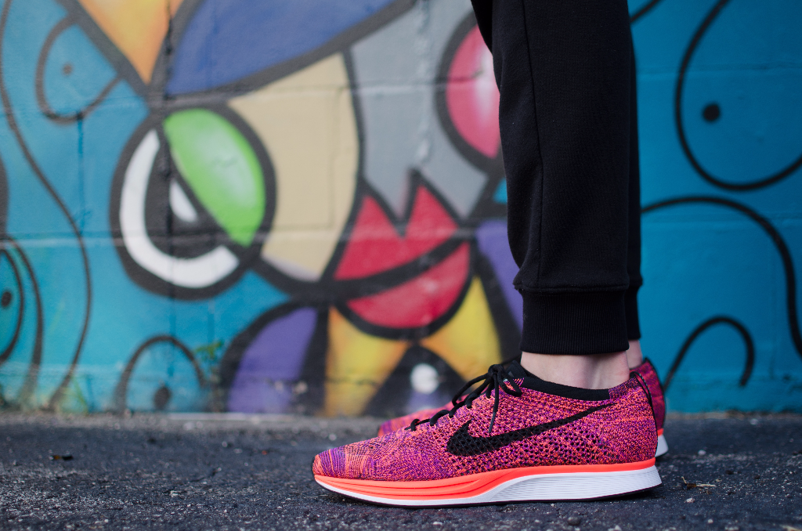

The Importants Exerise Newsletter
Always consult your medical doctor before taking on a strenous exerise regimen for the first time. Most people start their session exerise with a cardio or areobic activity-brisk walk, run bike ride any vigorous movement that gets your heart really pumpin around the track at the local hight school. I'm imspired senior who there each morning to get therir blood pumping I'm encouraged to pep up my step I never run through I'm concerned about the impact running would have on my knees .
I Knew that my very life depeneded on making a change and change I did. At six every other morning I woke up at five third for my moring workout I really did not feel like it but here is some things I learned Increase your program Gradually and regularly. Changed it up so you do not get board if you ususally walk the treadmill try your neignbor hood walk for variety Better yet bike riding
I Knew that my very life depeneded on making a change and change I did. At six every other morning I woke up at five third for my morining to workout I really did not feel like it but here is sometimes but I learned Increase my program Gradually and regularly. I changed it up so I did not get board if I ususally walk the treadmill try your neignbor hood walk for variety Better yet bike riding.
